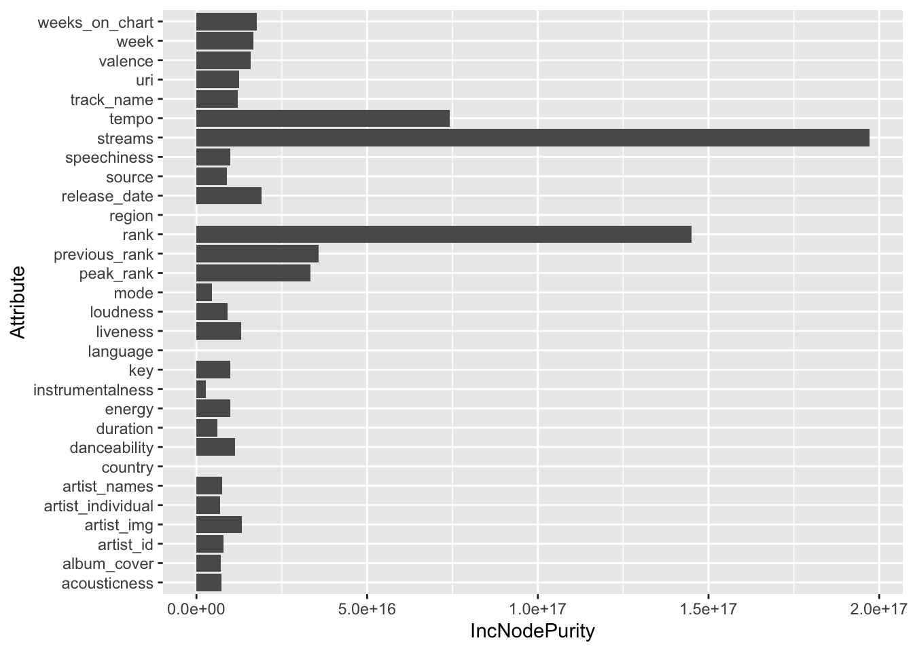

Test
Correlation Map
randomForest Prediction (WORKS)
[1] "Feature Importance for track_total_streams"
IncNodePurity
uri 1.008339e+16
rank 1.578678e+17
artist_names 7.658460e+15
artist_individual 8.531226e+15
artist_id 8.858081e+15
artist_img 1.105768e+16
track_name 1.493031e+16
release_date 2.232840e+16
album_cover 8.986854e+15
source 7.923041e+15
peak_rank 3.293506e+16
previous_rank 3.973408e+16
streams 1.865568e+17
week 1.693354e+16
danceability 1.214331e+16
energy 9.778220e+15
key 9.786425e+15
mode 4.153966e+15
loudness 1.122365e+16
speechiness 1.059387e+16
acousticness 5.649295e+15
instrumentalness 3.561126e+15
liveness 1.099776e+16
valence 1.679486e+16
tempo 6.131325e+16
duration 6.346001e+15
country 0.000000e+00
region 0.000000e+00
language 0.000000e+00
[1] "Feature Importance for weeks_on_chart"
IncNodePurity
uri 19502.1686
rank 21494.4910
artist_names 11916.6710
artist_individual 11574.9364
artist_id 7359.2124
artist_img 15213.9027
track_name 11080.0793
release_date 147288.0716
album_cover 14709.4456
source 17265.5916
peak_rank 102411.1079
previous_rank 14734.0326
streams 17045.9993
week 988.9588
danceability 21912.8870
energy 23143.6259
key 6820.2051
mode 1980.1139
loudness 10454.9817
speechiness 22234.1363
acousticness 27540.6443
instrumentalness 11325.1203
liveness 10593.2857
valence 10839.1760
tempo 13507.1353
duration 13206.9149
country 0.0000
region 0.0000
language 0.0000randomForest Prediction (test)
Rows: 30
Columns: 2
$ IncNodePurity <dbl> 1.243656e+16, 1.449512e+17, 7.549669e+15, 6.877833e+15, …
$ Attribute <chr> "uri", "rank", "artist_names", "artist_individual", "art…
Make clickable bar graph with girafe https://github.com/jfrench/DataWrangleViz/blob/master/06-interactive-graphics-ggiraph.Rmd#L215
Next, we add another variable, bar_onclick to the diamonds data frame to add the window.open(" ... ") part of the onlick command to the bar_google variable. We use the paste0 function and a series of single and double quotes to get the desired format.
Lastly, we map the bar_onclick variable to the onclick aesthetic in our interactive bar chart so that when the user clicks a bar, a corresponding google search for that diamond cut is opened.